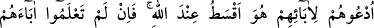
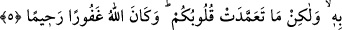

kendisine nisbet etmiştir). “İstedik ki, Rableri onun yerine kendilerine, ondan daha
temiz ve daha merhametlisini versin.” (el-Kehf, 18/81) sözü de onun gibidir. Burada
övülecek ve yerilecek şey ortak olduğu için böyle bir ifâde kullanmıştır. “Rabbin istedi
ki onlar (büyüyüp) güçlü çağlarına ersinler ve Rabbinden bir rahmet olarak
hazinelerini çıkarsınlar.” (el-Kehf 18/82) Burada ise övgü yalnız Allâh’a tahsis
edilmiştir. Çünkü bir şey bir yöne nisbetle yergi, başka bir yöne izâfetle övgü
kazanabilir. Aslında o şey bizâtihi aynıdır. Ancak nisbet ile hüküm değişir.
Hallerin edebi, tâatte sefer hâli ve ma‘sıyette sefer hâli gibidir. Hüküm de hâle göre
değişir.
Sayılardaki edeb, abdest uzuvlarına tahâret fiillerinde ilâve ya da eksiltme
yapmamaktır. Namazların, zekatların ve benzerlerinin sayılarında da durum aynıdır.
Yine gusül abdestinde su miktarı bir sâ‘ı, abdestte ise bir müdd’ü geçmemelidir.[160]
Müessir konusunda kulun edebi, mesela katli/adam öldürmeyi veya gasbı fâiline
nisbet etmek ve ona hadleri uygulamaktır.
Te’sirin kendisinde görüldüğü kimse/şey hakkında kulun edebi, mesela kısas yoluyla
öldürülen kimsenin kendisinin öldürdüğü sıfatta mı yoksa başka bir şekilde mi
öldürüldüğüne, yine gasbedilen şeyin gasbı bizzat yapan kimseden başkasının elinde
bulunduğu zaman bakar (ve ona göre hareket eder).
İşte bütün bunlar şerîat âdâbının tamamıdır. Kim bunları bilip öğrenir ve uygularsa,
hak yolu bulanlardan ve mutlak dalâletten kurtulanlardan olur. Bu husus böyle
bilinmelidir.
5. Onları (evlâd edindiklerinizi) babalarına nisbet ederek çağırın. Allah yanında
en doğrusu budur. Eğer babalarının kim olduğunu bilmiyorsanız, bu takdirde onları
din kardeşleriniz ve görüp gözettiğiniz kimseler olarak kabul edin. Yanılarak
yaptıklarınızda size vebal yok; fakat kalplerinizin bile bile yöneldiğinde günah
vardır. Allah bağışlayandır, esirgeyendir.
“Onları (evlât edindiklerinizi) babalarına nisbet ederek çağırın.”
Bazıları “Bu âyet, Zeyd b. Hârise b. Şerâhîl el-Kelbî hakkındadır.” demiştir.
Câhiliyye döneminde Araplar birbirlerine baskın ve saldırı düzenler birbirlerini esir
alırlardı. İşte böyle bir baskında küçük yaşta esir düşen Zeyd b. Hârise’yi, “Hakîm b.
Hizam, halası Hüveylid kızı Hatice (r.a.) için satın aldı. Rasûlullah (s.a.) Hatice (r.a.)
ile evlenince Zeyd’i O’na hîbe etti. Daha sonra Zeyd’i babası ve amcası istediler.